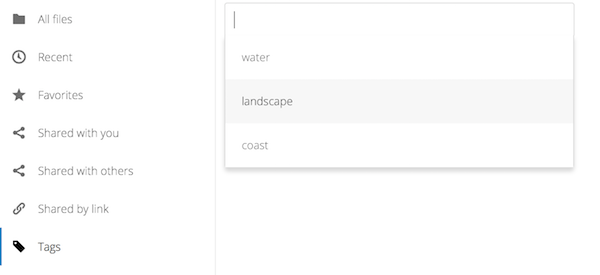

Nextcloud web arayüzünü kullanarak dosyalarınıza erişmek
Nextcloud dosyalarınıza Nextcloud web arayüzünden erişerek, dosyaları oluşturabilir, ön izleyebilir, düzenleyebilir, silebilir, paylaşabilir ve yeniden paylaşabilirsiniz. Nextcloud yöneticiniz bu özellikleri devre dışı bırakabilir. Bu nedenle sisteminizde bunlardan herhangi biri eksikse sunucu yöneticinizle görüşün.

Dosyaları etiketlemek
Dosyalara etiketler atayabilirsiniz. Etiketler oluşturmak için bir dosyanın ayrıntılar görünümünü açın. Ardından etiketlerinizi yazın. Birden fazla etiket yazmak için her etiketten sonra Enter tuşuna basın. Tüm etiketler sistem etiketleridir ve Nextcloud sunucunuzdaki tüm kullanıcılar tarafından paylaşılır.

Ardından, dosyaları etiketlere göre süzmek için sol yan çubuktaki etiketler süzgecini kullanın:

Görüntü oynatıcı
Nextcloud üzerinde görüntü dosyalarını tıklayarak görüntü oynatıcı uygulamasıyla izleyebilirsiniz. Yerel Nextcloud görüntü oynatıcının sağlayacağı görüntü akışı, web tarayıcınıza ve görüntünün biçimine bağlıdır. Nextcloud yöneticiniz görüntü akışını etkinleştirdiyse ve web tarayıcınızda çalışmıyorsa, bu bir web tarayıcı sorunu olabilir. Web tarayıcılarında desteklenen çoklu ortam biçimleri için https://developer.mozilla.org/en-US/docs/Web/HTML/Supported_media_formats#Browser_complete adresine bakabilirsiniz.

Dosya denetimleri
Nextcloud üzerinde, sunucu yöneticiniz tarafından etkinleştirildiyse, görsel dosyalarını, MP3 kapaklarını ve metin dosyalarını ön izleyebilirsiniz. Şu işlemlerin denetimleri görmek için imleci bir dosya veya klasörün üzerine getirin:
- Sık kullanılanlar
Sık kullanılan olarak işaretlemek için dosya simgesinin solundaki yıldıza tıklayın:

Ayrıca sol yan çubuktaki sık kullanılanlar süzgeciyle tüm sık kullanılanlarınızı hızlıca bulabilirsiniz.
- Taşma menüsü
Taşma menüsü (üç nokta) dosya ayrıntılarını görüntüler ve dosyaları yeniden adlandırmanızı, indirmenizi ya da silmenizi sağlar:

Ayrıntılar görünümü etkinlikler, paylaşım ve sürüm bilgilerini görüntüler:

Sol alttaki Ayarlar dişli simgesi, Nextcloud web arayüzünde gizli dosyaların görüntülenmesini ya da gizlenmesini sağlar. Bunlara nokta dosyaları da denir, çünkü .mailfile örneğindeki gibi adlarının önünde bir nokta bulunur. Nokta karakteri, işletim sistemine, siz görüntülemeyi seçmediğiniz sürece bu dosyaları dosya tarayıcılarında gizlemesini söyler. Bunlar genellikle yapılandırma dosyalarıdır, bu nedenle bunları gizleme seçeneğinin olması dağınıklığı azaltır.

Dosyaları ön izlemek
Dosya adına tıklayarak, sıkıştırılmamış metin dosyalarına, OpenDocument dosyalarına, görüntü ve görsel dosyalarına iç Nextcloud görüntüleyicilerinde bakabilirsiniz. Nextcloud yöneticiniz bunları etkinleştirmişse, ön izlemelerine bakabileceğiniz başka dosya türleri de olabilir. Nextcloud bir dosyayı görüntüleyemediğinde, bir indirme işlemi başlatarak dosyayı bilgisayarınıza indirir.
Durum simgelerini paylaşmak
Paylaşılmış herhangi bir klasör Paylaşılmış kaplama simgesiyle işaretlenir. Herkese açık bağlantı paylaşımları bir zincir bağlantısı ile işaretlenir. Paylaşılmayan klasörler işaretlenmez:

Dosya ve klasör oluşturmak ya da yüklemek
Dosyalar uygulamasındaki Yeni düğmesine tıklayarak doğrudan bir Nextcloud klasörü içine yeni dosyalar veya klasörler yükleyin veya oluşturun:

Yeni düğmesinde şu seçenekler bulunur:
- Yukarı ok
Dosyaları bilgisayarınızdan Nextcloud üzerine yükler. Dosyaları dosya yöneticinizden sürükleyip bırakarak da yükleyebilirsiniz.
- Metin dosyası
Yeni bir metin dosyası oluşturur ve dosyayı geçerli klasörünüze ekler.
- Klasör
Geçerli klasörde yeni bir klasör oluşturur.
Dosya ya da klasörleri seçmek
İşaret kutularına tıklayarak bir ya da birkaç dosya veya klasör seçebilirsiniz. Geçerli klasördeki tüm dosyaları seçmek için, dosya listesinin en üstünde bulunan işaret kutusuna tıklayın.
Birkaç dosya seçtiğinizde hepsini silebilir ya da üstte görünen Sil ya da İndir düğmelerini kullanarak ZIP dosyası biçiminde indirebilirsiniz.
Not
İndir düğmesi görüntülenmiyorsa, yöneticiniz bu özelliği devre dışı bırakmıştır.
Dosya görünümünü süzmek
Dosyalar sayfasındaki sol yan çubukta, dosyalarınızı hızla sıralamak ve yönetmek için çeşitli süzgeçler bulunur.
- Tüm dosyalar
Varsayılan görünüm; erişiminiz olan tüm dosyaları görüntüler.
- Sık kullanılanlar
Sarı yıldızla işaretlenmiş dosya veya klasörler.
- Sizinle paylaşılan
Başka kullanıcılar veya gruplar tarafından sizinle paylaşılan tüm dosyaları görüntüler.
- Diğerleri ile paylaşılan
Başka kullanıcılar veya gruplarla paylaştığınız tüm dosyaları görüntüler.
- Bağlantı ile paylaşılan
Herkese açık bağlantı ile paylaştığınız tüm dosyaları görüntüler.
- Dış depolama (isteğe bağlı)
Amazon S3, SMB/CIFS, FTP gibi dış depolama aygıt ve hizmetlerinde erişiminiz olan dosyalar…
Dosyaları taşımak
Dosya ve klasörleri sürükleyip herhangi bir klasöre bırakarak taşıyabilirsiniz.
Açıklamalar
Herhangi bir dosya veya klasöre açıklama yazmak ve bunları okumak için ayrıntılar görünümünü kullanın. Açıklamalar, dosyaya erişimi olan herkes tarafından görülebilir: